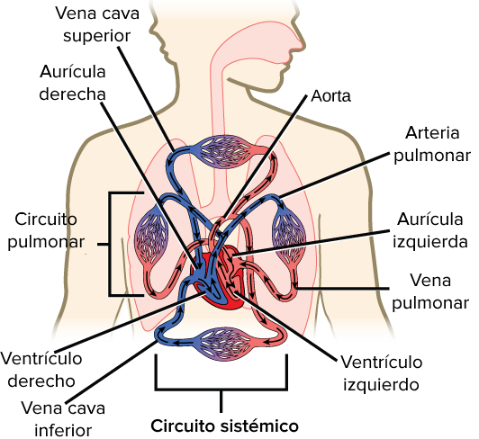
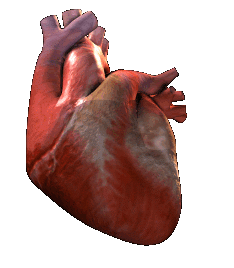
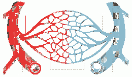

Introduction
The circulatory system is one of the most vital systems of the human body. It consists of a complex set of organs and structures that work together to carry out blood circulation throughout the body. Its main function is to transport oxygen, nutrients and other essential substances to cells, and eliminate waste products generated by cellular metabolism.
Understanding how the circulatory system works is essential to maintaining good health and preventing cardiovascular diseases.
The circulatory system is made up of three main elements:
- The heart, a muscular organ that acts as the central pump of the system. 
- Blood vessels form a complex network of tubes through which blood flows. 
- Blood, a vital fluid that carries oxygen, nutrients, hormones and other essential compounds.
Functions of the Circulatory System
The circulatory system performs several essential functions in the human body:
- Oxygen transport: Oxygen-rich blood is pumped from the lungs to the rest of the body, where it is used by cells to carry out cellular respiration.
- Nutrient transport: Essential nutrients, such as carbohydrates, fats and proteins, are transported through the blood to cells to provide energy and build tissue.
- Transport of hormones: Hormones are chemical messengers produced by endocrine glands that regulate various bodily functions. The circulatory system is responsible for carrying these hormones to their specific destinations.
- Waste Transport: Waste products of cellular metabolism, such as carbon dioxide, are transported back to the heart and then to the lungs for elimination.
- Body temperature regulation: The circulatory system helps maintain a constant body temperature by distributing heat generated by metabolism.
Diseases of the Circulatory System
The circulatory system can be affected by various conditions and diseases. Some of the most common diseases include:
- Heart disease: A set of conditions that affect the function of the heart, including coronary heart disease, heart failure, and arrhythmias.
- Stroke: Occurs when blood flow to the brain is interrupted, which can result in brain damage.
- Peripheral arterial disease: It is characterized by narrowing of the arteries that supply blood to the extremities.
- Venous disease: Includes conditions such as varicose veins and deep vein thrombosis.
- Hypertension: A condition in which blood pressure is persistently high, which can increase the risk of cardiovascular disease.
- High cholesterol: High levels of cholesterol in the blood can contribute to the development of cardiovascular diseases.
Prevention of Circulatory System Diseases
To maintain a healthy circulatory system, it is recommended to follow a series of practices and adopt a healthy lifestyle:
- Maintain a healthy weight: Maintaining an adequate weight reduces the load on the circulatory system and reduces the risk of cardiovascular diseases.
- Exercise regularly: Regular physical activity strengthens the heart and blood vessels, improving circulation.
- Eat a healthy diet: A balanced, nutrient-rich diet is essential for cardiovascular health.
- Quit smoking: Smoking is an important risk factor for diseases of the circulatory system. Quitting smoking has immediate and long-term benefits.
- Control blood pressure, cholesterol and blood sugar: Maintaining these values within healthy ranges is essential to prevent cardiovascular diseases.